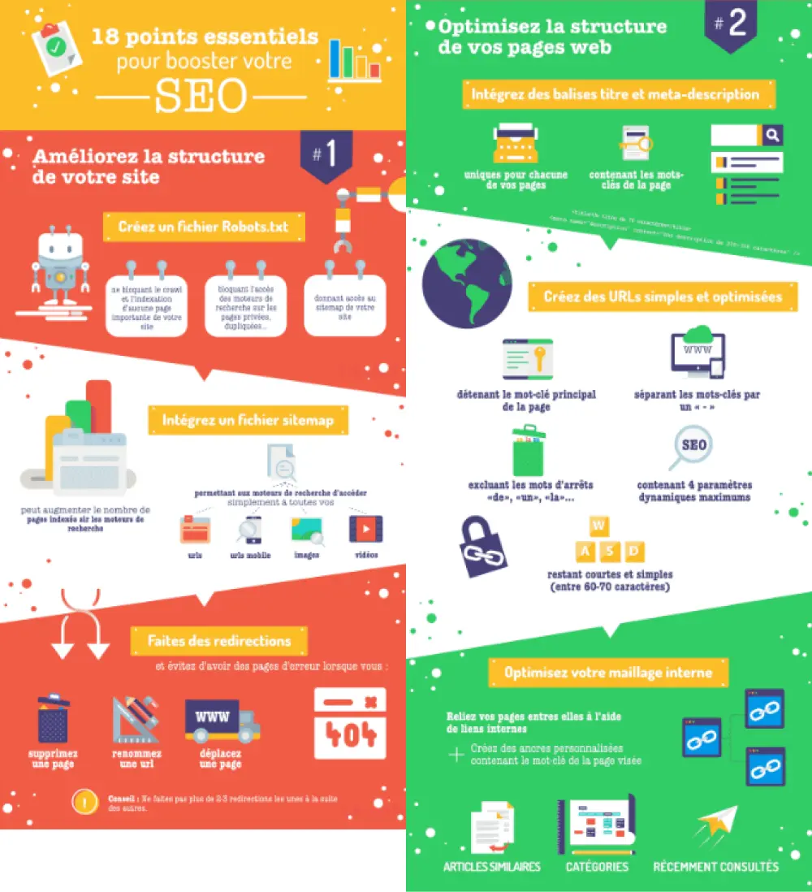

Intégration et animation d'une infographie
Contexte


Lien vers le site :
Infographie animée
Dans le cadre de ce projet, il a été demandé de choisir une infographie à coder et à animer en HTML et CSS.
Processus
- Choix d'une infographie
- Reproduction des dessins vectoriels sous Adobe Illustrator
- Création des maquettes desktop, tablette et smartphone
- Intégration des maquettes
Choix d'une infographie
Mon choix d'infographie s'est porté sur un contenu en lien avec le web : le domaine du SEO. En effet, il me semblait intéressant d'appronfondir ce sujet important et j'ai saisi l'occasion de travailler sur ce thème via ce projet. J'ai choisi cette infographie en raison de son contenu détaillé. Je n'en ai cependant codé qu'une seule partie (un tiers) en raison de sa longueur.
Elle est issue du site Like@d et a été créée par Sandra. L'intégralité de l'article est consultable en cliquant ici.
Reproduction des dessins vectoriels sous Adobe Illustrator
En amont de l'intégration de cette infographie, les dessins ont dû être reproduits via le logiciel Illustrator : en effet, la qualité de l'image n'aurait pas été suffisante pour extraire directement les dessins de l'infographie initiale. Ce fût l'occasion de réutiliser des outils tels que la plume et le pathfinder.
Voici un exemple des dessins reproduits dans leur forme vectorielle :
Création des maquettes desktop, tablette et smartphone
Les maquettes ont été réalisées pour les supports suivants :
- ordinateur de résolution 1440 x 1024,
- tablette de résolution 834 x 1194,
- mobile de résolution 375 x 667.
L'ensemble de l'infographie, grâce à son responsive design, pourra être consultée sur ces trois écrans.
Vous trouverez ci-dessous les visuels des trois maquettes, pour un format ordinateur, un format tablette et un format smartphone.
Les maquettes sont également consultables en cliquant ici.